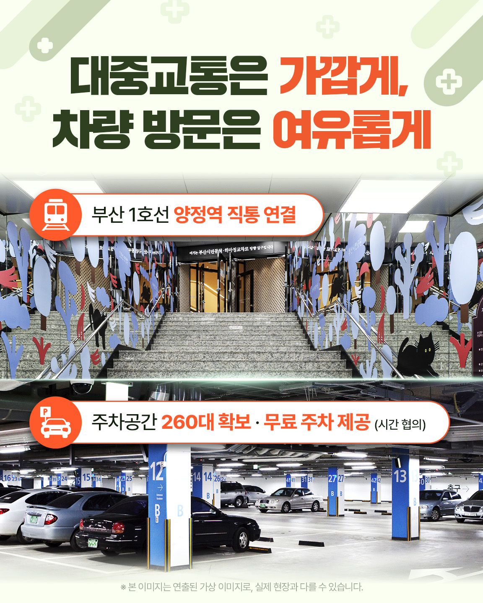
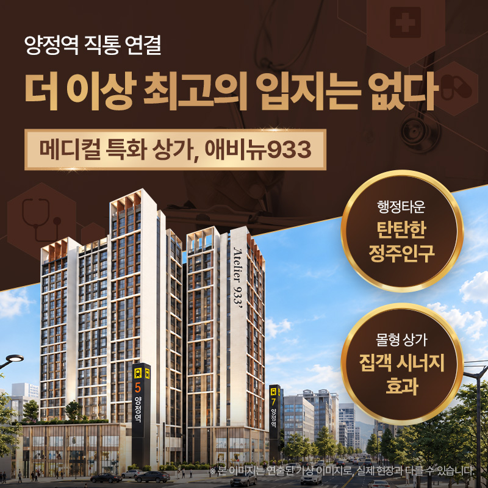
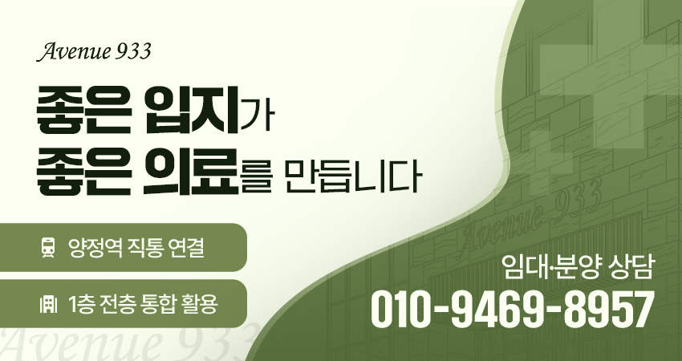

1F · MEDICAL SPECIAL ZONE하나의 의료 브랜드로
하나의 의료 브랜드로
계획하는 1층
101호~116호를 개별 점포가 아니라 통합적인 의료 공간 관점에서 검토할 수 있습니다. 진료실·검사실·처치실·상담실·대기공간·재활공간 등 운영 방식에 맞춘 공간 구성을 고려할 수 있습니다.
내과소아청소년과정형외과피부과치과이비인후과한의원

양정역과 바로 이어지는 접근성, 1층 메디컬 특화 공간, 2층 프리미엄 스시뷔페 고메스퀘어까지. 병·의원 개원을 검토하는 분들이 입지와 동선을 한눈에 파악할 수 있도록 애비뉴933을 새롭게 소개합니다.
희망 진료과와 연락처를 남겨주시면 상담을 위한 기본 정보를 확인할 수 있습니다.
병·의원은 한 번 방문하고 끝나는 공간이 아닙니다. 반복 내원, 보호자 동행, 검사·치료 동선까지 고려해야 하기에 일반 상가와 다른 접근 기준이 필요합니다.
어린이 동반 보호자와 고령층 환자도 부담을 줄일 수 있는 이동 환경을 고려합니다.
양정역에서 상가까지 이어지는 연결 동선은 정기 진료와 재방문 편의성을 높이는 요소입니다.
대기·진료·검사·처치·상담·재활 등 의료 운영에 필요한 공간 구성을 검토할 수 있습니다.

현장 강점이 보이도록 ‘양정역 → 연결 통로 → 상가 진입 → 1층 메디컬’의 흐름을 콘텐츠 전면에 배치했습니다.


단순 유동인구보다 ‘반복적으로 의료를 이용할 생활권 수요’가 어떤 구조로 형성되는지를 보여주는 방식으로 재구성했습니다.
제공 자료 기준 약 6만1천 세대, 아파트 약 3만4천 세대의 생활권 수요.
오피스와 관공서 방문 수요가 더해져 평일 의료 이용 가능성을 검토할 수 있습니다.
외래, 검진, 소아, 통증·재활 등 생활권 특성에 맞는 다양한 진료과를 고려할 수 있습니다.


메디컬을 주인공으로 두고, 2층 고메스퀘어는 상가의 방문 목적성과 체류를 보완하는 앵커 콘텐츠로 설명합니다.
101호~116호를 개별 점포가 아니라 통합적인 의료 공간 관점에서 검토할 수 있습니다. 진료실·검사실·처치실·상담실·대기공간·재활공간 등 운영 방식에 맞춘 공간 구성을 고려할 수 있습니다.
2층에는 프리미엄 스시뷔페 고메스퀘어가 자리해 메디컬과 별개의 목적 방문 수요를 형성합니다. 홈페이지에서는 이를 ‘병원 광고의 핵심’이 아니라 상가 전체의 집객과 인지도를 보완하는 요소로 배치합니다.
2F 고메스퀘어 · 집객 보조 요소
제공 가이드의 6개월 개원 마케팅 지원 내용을 그대로 복제하지 않고, 홈페이지에서는 핵심만 정돈해 신뢰감 있게 보여줍니다.


메디컬 특화 공간은 1층을 중심으로 안내합니다. 개별 호실과 통합 활용 가능 범위는 실제 상담 자료를 기준으로 확인해야 합니다.
부산도시철도 1호선 양정역에서 연결 통로를 통해 애비뉴933 상업시설로 접근하는 구조입니다. 실제 이동 동선은 현장 방문 시 확인하는 것이 좋습니다.
2층에는 프리미엄 스시뷔페 고메스퀘어가 자리합니다. 메디컬 페이지에서는 상가 집객과 체류를 보완하는 요소로 소개합니다.
제공 자료에는 총 260대 규모의 주차 공간이 안내되어 있습니다. 무료주차 시간과 운영 조건은 실제 상담 시 최종 확인이 필요합니다.
메디컬 입점 목적의 임대·매매 상담을 한 곳에서 받을 수 있도록 CTA를 통일하는 방향으로 구성했습니다.
부산진구 중앙대로 933 · 양정역 직통 연결 · 1층 메디컬 특화